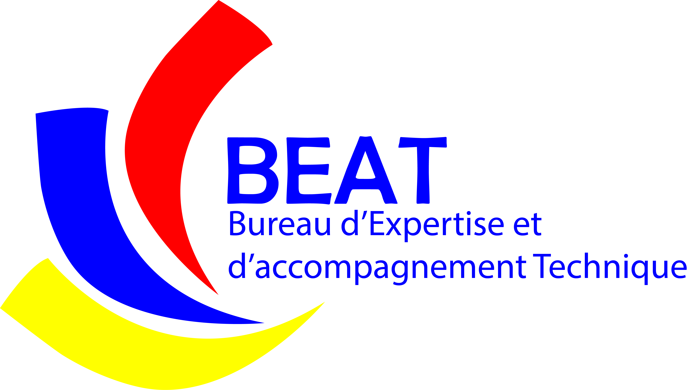

Nos domaines :
Production des modules de formation
Formation dans différents domaines (communication pour le changement de comportement, entreprenariat, la réduction des risques de catastrophes, innovation et technologie de l'information, changement climatique et environnement, protection des personnes et de l'environnement)
Études dans différents domaines (entreprenariat, la réduction des risques de catastrophes, innovation et technologie de l'information, changement climatique et environnement, protection des personnes et de l'environnement)
Diagnostic et accompagnement organisationnel
Couverture et documentation des événements (ateliers et projets)